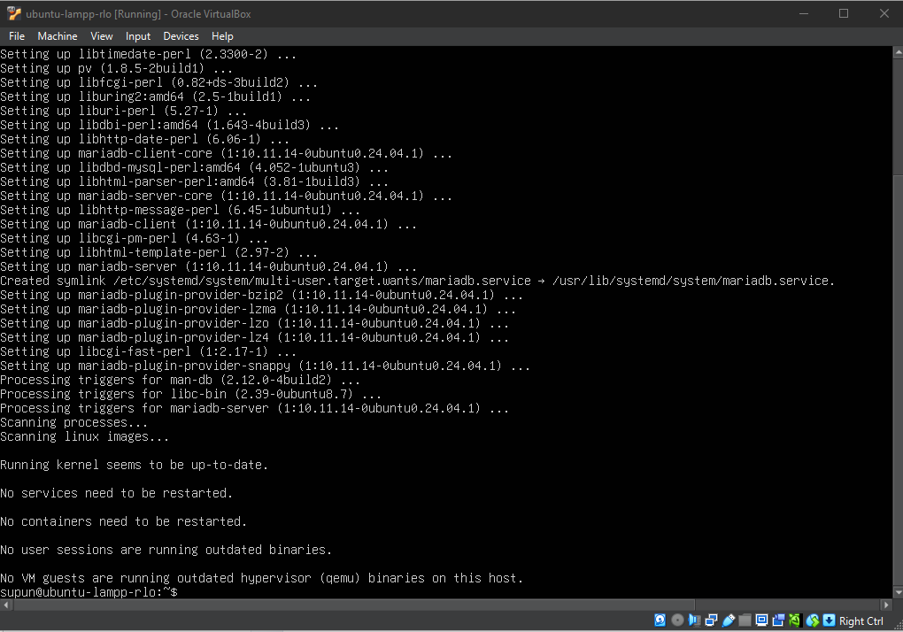
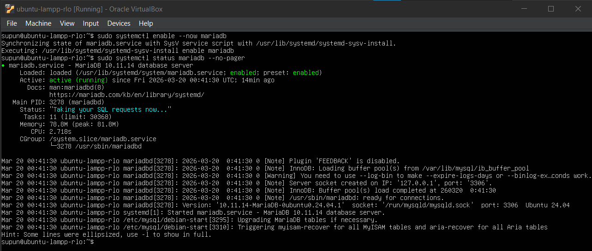
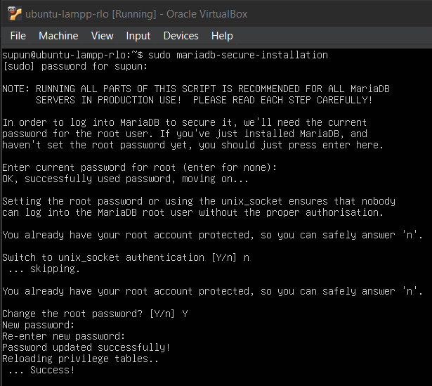
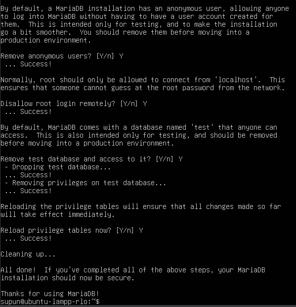
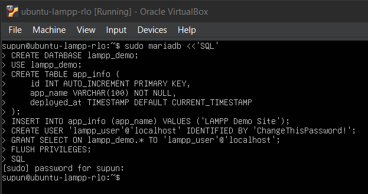
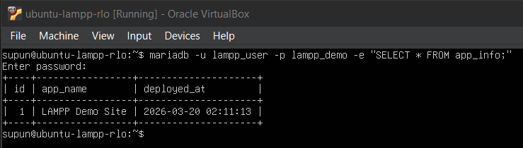

Hands-on module
Module 4: Install and Secure MariaDB
Install MariaDB, run the secure installation routine, create the demo database, and provision a least-privilege application account.
Module progress
0 of 0 checkpoints completed
What you will complete
- Install MariaDB server and client tools.
- Run the secure installation step.
- Create a database, table, and application user.
Steps
Install MariaDB packages
MariaDB provides the relational database layer for the demo application. Install both the server and client tools so you can manage the database locally from the Ubuntu shell.
1. Install the required packages
- Run
sudo apt install mariadb-server mariadb-client -y.Install MariaDB packagessudo apt install mariadb-server mariadb-client -y
Package install: Let the package installation finish completely. A successful run returns to the shell prompt after the MariaDB packages and their dependencies are configured. - Wait for the package install to complete without errors.
- Make sure the command finishes before moving to any SQL work.
2. Start and enable the service
- Run
sudo systemctl enable --now mariadbso the database starts now and also after future reboots.Enable and start MariaDBsudo systemctl enable --now mariadb - Check the service status to confirm MariaDB is active.
Check the MariaDB service status
sudo systemctl status mariadb --no-pager
MariaDB service: After enabling the service, confirm that mariadb.serviceisactive (running)before continuing to the security and database setup steps. - If the service fails to start, troubleshoot that first rather than attempting database creation.
Run the secure installation step
Before creating application data, apply MariaDB's built-in baseline hardening. The goal is to remove common insecure defaults on a fresh install.
1. Launch the helper
- Run
sudo mariadb-secure-installation.Run the secure installation helpersudo mariadb-secure-installation - Read each prompt carefully because the script is interactive.
2. Work through the common security prompts
- When the helper asks for the current MariaDB root password on this fresh install, press Enter because you have not set one yet.
- When it asks whether to switch to
unix_socketauthentication, type n to match the flow shown in the screenshot. - When it asks whether to change the root password, type Y, then enter and confirm the new MariaDB root password.

Root password setup: On a fresh install, press Enter for the current root password, answer n to the unix_socketprompt shown here, and then answer Y to create and confirm a new MariaDB root password. - When it asks whether to remove anonymous users, type Y. This removes accounts that could otherwise log in without a named user.
- When it asks whether to disallow remote root login, type Y. This keeps the MariaDB root account limited to local administration instead of network access.
- When it asks whether to remove the test database and access to it, type Y. The test database is only for experimentation and should not remain on a server you are hardening.
- When it asks whether to reload the privilege tables now, type Y. This makes the security changes take effect immediately instead of waiting for a later reload or restart.

3. Understand the Ubuntu authentication model
- On Ubuntu, it is normal for the helper to say the root account is already protected before you answer the later password prompts.
- For the next section in this RLO, continue to use
sudo mariadbfor local administration from the server console. - The helper removes insecure defaults; it does not change the overall SQL workflow used in the next step.
Create the demo database and application user
Now create the sample data that the PHP application will read later. Keep the design simple: one database, one table, one seed row, and one application user with limited privileges.
1. Create the demo database objects
- Use the batch setup command below to create the demo objects in one pass.
Create the database, table, seed row, and least-privilege user
sudo mariadb <<'SQL' CREATE DATABASE lampp_demo; USE lampp_demo; CREATE TABLE app_info ( id INT AUTO_INCREMENT PRIMARY KEY, app_name VARCHAR(100) NOT NULL, deployed_at TIMESTAMP DEFAULT CURRENT_TIMESTAMP ); INSERT INTO app_info (app_name) VALUES ('LAMPP Demo Site'); CREATE USER 'lampp_user'@'localhost' IDENTIFIED BY 'ChangeThisPassword!'; GRANT SELECT ON lampp_demo.* TO 'lampp_user'@'localhost'; FLUSH PRIVILEGES; SQL
Database setup script: This batch command creates the lampp_demodatabase, adds theapp_infotable and seed row, createslampp_user, grantsSELECTaccess, and reloads privileges in one pass. - Create a database named
lampp_demo. - Switch into that database with
USE lampp_demo;. - Create the
app_infotable with an ID column, application name, and timestamp. - Insert one seed row so the application has something to display.
2. Create the application login
- Create a user named
lampp_userthat connects fromlocalhost. - Assign a strong password and record it because you will need the same value in the PHP configuration later.
- Grant only
SELECTaccess onlampp_demoso the account has the minimum rights needed for the demo site. - Run
FLUSH PRIVILEGES;after the grant statements.
3. Test the least-privilege account
- Connect using
lampp_userand queryapp_info.Test the new application accountmariadb -u lampp_user -p lampp_demo -e "SELECT * FROM app_info;"
Least-privilege test: After you run the command, MariaDB prompts for the password you assigned to lampp_user. A successful result returns the seeded row fromapp_info. - Confirm the row you inserted is returned successfully. That proves both the database content and the application account are ready for Module 6.
Troubleshooting
| Issue | What to check |
|---|---|
| Cannot log in as root with a password | On Ubuntu, try sudo mariadb. Socket authentication is common for the administrative account. |
| SQL syntax error | Run one statement at a time inside the MariaDB shell to isolate the failing line. |
| Application user cannot connect | Verify the username, password, host (localhost), and that FLUSH PRIVILEGES; completed. |
Evidence to capture
- A screenshot or terminal capture showing the MariaDB service is active after installation.
- A short note or screenshot summarizing the key choices made during
mariadb-secure-installation. - A screenshot or terminal capture showing that the
lampp_demodatabase andapp_infotable were created. - A screenshot of the query results from
mariadb -u lampp_user -p lampp_demo -e "SELECT * FROM app_info;".